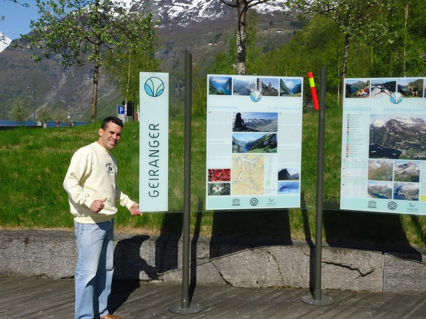

Geiranger é um vilarejo na Noruega, localizado no interior do Fiorde de Geiranger,
um Patrimônio Mundial da UNESCO conhecido por sua beleza natural espetacular, com montanhas imponentes,
cachoeiras e águas cristalinas. É um dos destinos turísticos mais famosos do país,
que pode ser explorado por meio de passeios de barco, trilhas e rotas cênicas de carro.